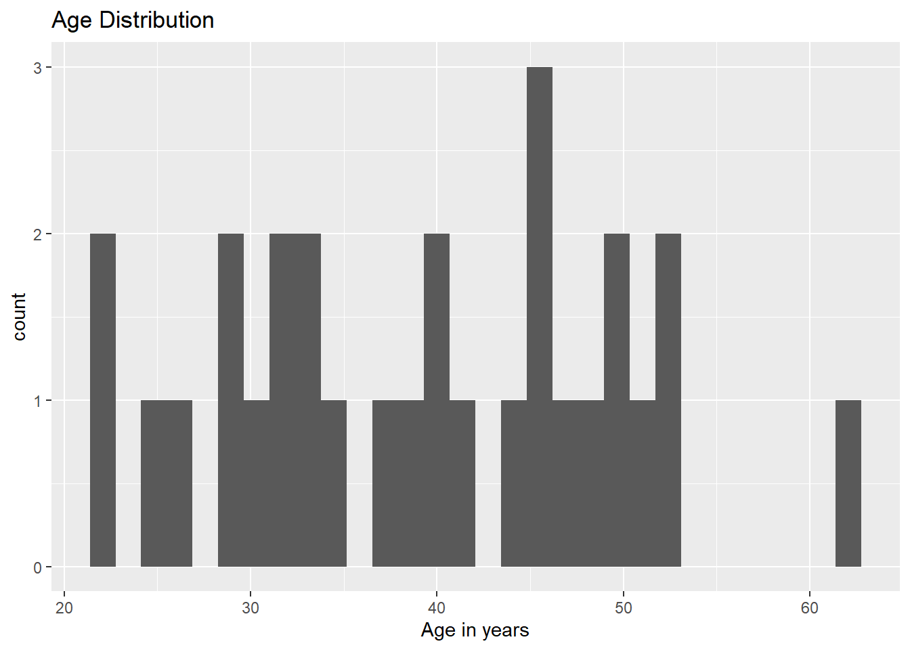
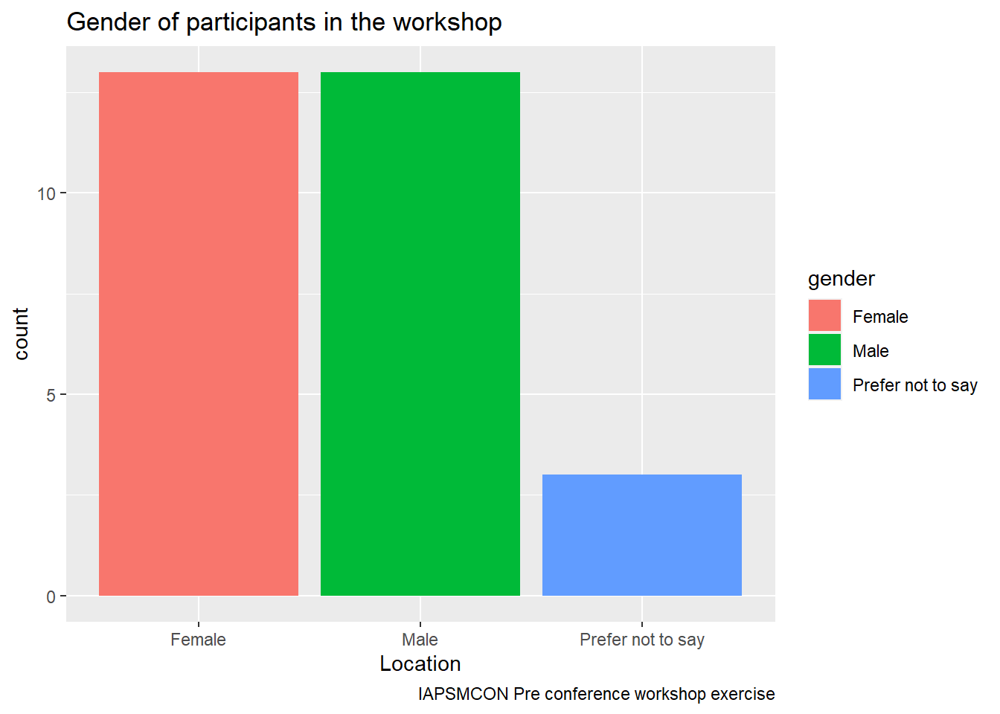
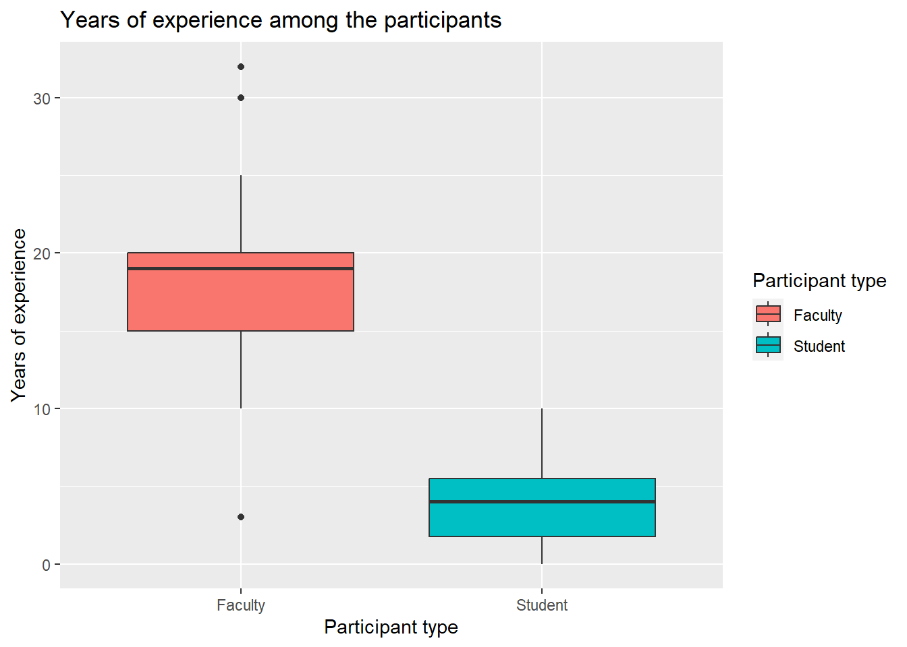

In this workbook we shall learn to work with data in R using data we collected from the participants of this workshop using a google form. The data will have the following variables :
Age
State/ UT of Residence
Gender
Years of professional experience
Area of practice
Whether student/faculty
Frequency of data analysis tools
Software of choice for data analysis
No. of conferences attended in 2023
Step 1: Loading data and packages
#| echo: true#| warning: false## Loading the packageslibrary(tidyverse)
here() starts at C:/Users/Arun/Dropbox/PhD/Workshops/communicating-research-workshop
library(gtsummary)# Loading the dataconf_data <-read_csv(here("data","quest_particip.csv"))
Rows: 29 Columns: 10
── Column specification ────────────────────────────────────────────────────────
Delimiter: ","
chr (7): Timestamp, State/UT of residence, Gender, Specialty area/ Area of p...
dbl (3): Age (in years), Years of professional experience (in numbers), Freq...
ℹ Use `spec()` to retrieve the full column specification for this data.
ℹ Specify the column types or set `show_col_types = FALSE` to quiet this message.
Step 2: Looking at the data
## View the data# conf_data |> view()conf_data |>dim()
[1] 29 10
## Overview of the dataconf_data |>dim()
[1] 29 10
## Glimpse the dataconf_data |>glimpse()
Rows: 29
Columns: 10
$ Timestamp <chr> "31/01/2024 17:41:04",…
$ `Age (in years)` <dbl> 49, 22, 26, 29, 33, 45…
$ `State/UT of residence` <chr> "Delhi", "Assam", "And…
$ Gender <chr> "Male", "Male", "Femal…
$ `Years of professional experience (in numbers)` <dbl> 20, 1, 2, 3, 5, 18, 1,…
$ `Specialty area/ Area of practice` <chr> "Clinical departments"…
$ `Whether student or faculty` <chr> "Faculty", "Student", …
$ `Frequency of using Data analysis tools` <dbl> 5, 1, 3, 2, 2, 4, 2, 5…
$ `Software of choice for data analysis` <chr> "SPSS", "R", "MS Excel…
$ `No. of conferences/workshops attended in 2023` <chr> "None", "1-3", "More t…
## Check names of variablesconf_data |>names()
[1] "Timestamp"
[2] "Age (in years)"
[3] "State/UT of residence"
[4] "Gender"
[5] "Years of professional experience (in numbers)"
[6] "Specialty area/ Area of practice"
[7] "Whether student or faculty"
[8] "Frequency of using Data analysis tools"
[9] "Software of choice for data analysis"
[10] "No. of conferences/workshops attended in 2023"
## Clean the names of the datasetconf_data <- conf_data |> janitor::clean_names()## Check of the names are cleanedconf_data |>names()
conf_data |>select(years_of_professional_experience_in_numbers) |># select the variableclass()
[1] "tbl_df" "tbl" "data.frame"
# a different wayconf_data |>pull(years_of_professional_experience_in_numbers) |># select the variable as a vectorclass()
[1] "numeric"
### Years of professional experience summaryconf_data$years_of_professional_experience_in_numbers |># '$' sign could be used to select any variable from a dataset.summary()
Min. 1st Qu. Median Mean 3rd Qu. Max.
0.00 5.00 10.00 12.48 20.00 32.00
### Age of the participantsconf_data |>pull(age_in_years) |>summary()
Min. 1st Qu. Median Mean 3rd Qu. Max.
22.00 32.00 40.00 39.21 47.00 62.00
conf_data$age_in_years |>summary()
Min. 1st Qu. Median Mean 3rd Qu. Max.
22.00 32.00 40.00 39.21 47.00 62.00
conf_data |>pull(age_in_years) |>summary()
Min. 1st Qu. Median Mean 3rd Qu. Max.
22.00 32.00 40.00 39.21 47.00 62.00
Exercise 1
What are the software of choice for data analysis among the participants ?
Can you tell how many participants are students ?
Grouping and summarising data
conf_data %>%group_by(gender) %>%# select variable to group by summarise(mean_age=mean(age_in_years)) ## selecting variable to summarise and the function
# A tibble: 3 × 2
gender mean_age
<chr> <dbl>
1 Female 37.3
2 Male 43.5
3 Prefer not to say 28.7
Exercise 2
What is the median years of experience for student and faculty groups?
Can you tell me about the frequency of using data analysis tools among those who who use different software for data analysis ?
Step 5: Data Wrangling
Renaming variables
# Renaming the dataconf_data <- conf_data |>rename(exp_years=years_of_professional_experience_in_numbers,#new_name = old_namearea_spec=specialty_area_area_of_practice,conf_no=no_of_conferences_workshops_attended_in_2023,da_tool=software_of_choice_for_data_analysis,freq_da_tool=frequency_of_using_data_analysis_tools )## Checking the new namesconf_data |>names()
# Creating a new variable called seniority from years of experienceconf_data <- conf_data |>mutate(seniority=if_else(# new_variable_name= exp_years>=mean(exp_years),"Seniors","Juniors"#arguement of years of experience if greater than mean, If arguement is true - Seniors,#If arguement is false - Juniors ))## Looking a new variableconf_data |>count(seniority)
# A tibble: 2 × 2
seniority n
<chr> <int>
1 Juniors 15
2 Seniors 14
Exercise 3
Can you make a new variable using the variable on frequency of use of data analysis tools? Code - 4,5 as more frequent | 1,2,3 as less frequent
Step 6: Data Visualization
# Plot 1: Create a histogram of Ageconf_data |># Step 1: Specify Datasetggplot() +# Step 2: Initiate the plotgeom_histogram( # Step 3: Add Geometry (stars with `geom_`)aes(x = age_in_years)) +# Step 4: Add Aesthetics (within the `aes()`)labs(title ="Age Distribution",x ="Age in years" )

# Plot 2: Create a barchart of genderconf_data |># Step 1: Specify Datasetggplot() +# Step 2: Initiate the plotgeom_bar( # Step 3: Add Geometry (stars with `geom_`)aes(x = gender, # Step 4a: Add Aesthetics (within the `aes()`)fill = gender)) +# Step 4b: Add Fill color (within the `aes()`)labs(title ="Gender of participants in the workshop",x ="Location",caption ="IAPSMCON Pre conference workshop exercise" )

# Plot 3: Create a boxplot of mean years of experience among participantconf_data |># Step 1: Specify Datasetggplot() +# Step 2: Initiate the plotgeom_boxplot( # Step 3: Add Geometry (stars with `geom_`)aes(x = whether_student_or_faculty, # Step 4a: Add grouping variable (within the `aes()`)y = exp_years,# Step 4b: Add continous variable (within the `aes()`)fill = whether_student_or_faculty)) +# Step 4b: Add Fill color (within the `aes()`)labs(title ="Years of experience among the participants",fill ="Participant type",x ="Participant type",y ="Years of experience" )

Exercise 4
Can you make a histogram on the frequency of data analysis tools? What happens when you give fill as the new variable you created in exercise 3?
Can you make a barchart on seniority of the participants ?
Can you create a boxplot on Frequency of data analysis tools among people who use different type of tools ?